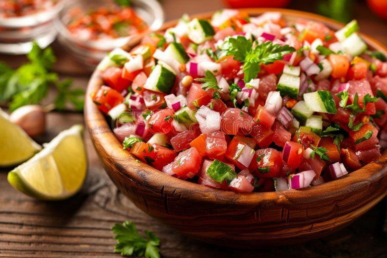

Página Colaborativa de Receitas

Vinagrete
Ingredientes
- 1 cebola média picada
- 2 tomates picados
- 1/2 pimentão verde picado
- 1/2 xícara de vinagre
- 1/2 xícara de azeite
- Sal e pimenta a gosto
Instruções
- Em uma tigela, misture a cebola, os tomates e o pimentão.
- Adicione o vinagre e o azeite.
- Tempere com sal e pimenta a gosto.
- Misture bem todos os ingredientes.
- Leve à geladeira por pelo menos 30 minutos antes de servir.
Autor: Pedro Jesus